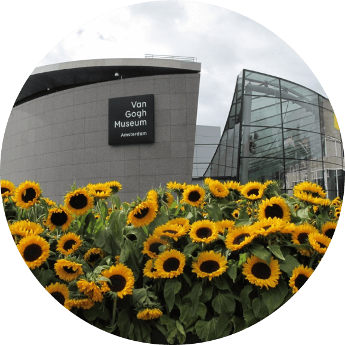

Пшеничное поле с воронами
1890
галерея ↗«Я хочу прикасаться к людям своим искусством, я хочу чтобы они говорили – он чувствует глубоко, он чувствует нежно»
Ван Гог работал очень интенсивно и в день мог создать по 1-2 произведения. Ван Гог был хорошо знаком с Полем Гогеном, Эдгаром Дега, Анри Тулуз-Лотреком, Эмилем Бернаром и Камилем Писсарро.
В одном из писем к брату Ван Гог пишет, что поскольку у него нет детей, то его картины и являются его потомством.
Наиболее крупная коллекция работ Винсента Ван Гога находится в Музее Винсента Ван Гога в Амстердаме. Большую часть работ представляют работы переданные в Музей родственниками Ван Гога.
подробнее